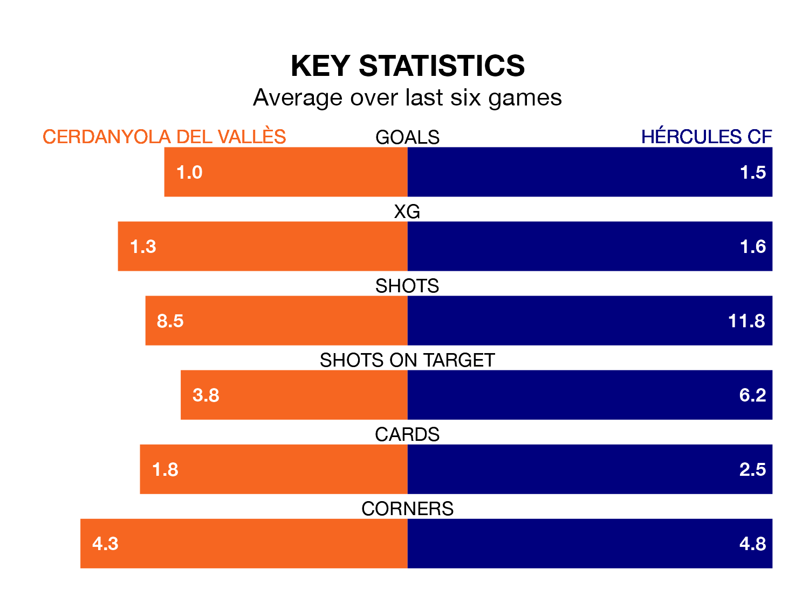

Struggling Cerdanyola del Vallès face Hércules CF at Estadi Municipal La Bòbila-Pinetons on Sunday looking to build on a win in their last league outing.
After securing all three points with a 1-2 victory over CE Europa on February 18, Cerdanyola del Vallès sit 16th in the Segunda División RFEF Group 3.
They travel to play a Hércules side fourth in the standings, who lost in their last match, 3-2 against Penya Independent.
With 37 goals in 23 games so far this season, Hércules are the league's third-highest scorers with 1.6 goals per game. And they are conceding fewer than average, letting in 25 goals at a rate of 1.1 per game.
Cerdanyola del Vallès, meanwhile, are below average scorers, with 1.1 goals per game, compared to a league average of 1.2. They have conceded 1.6 goals per game.
The hosts are in bad form in the Segunda División RFEF Group 3, with one win and a draw from their last six games.
With two wins and four losses over that period, the away side's form is slightly better – they have taken six points from 18, compared to Cerdanyola del Vallès's four.
Updated: 10:08 (UTC), 23/02/24